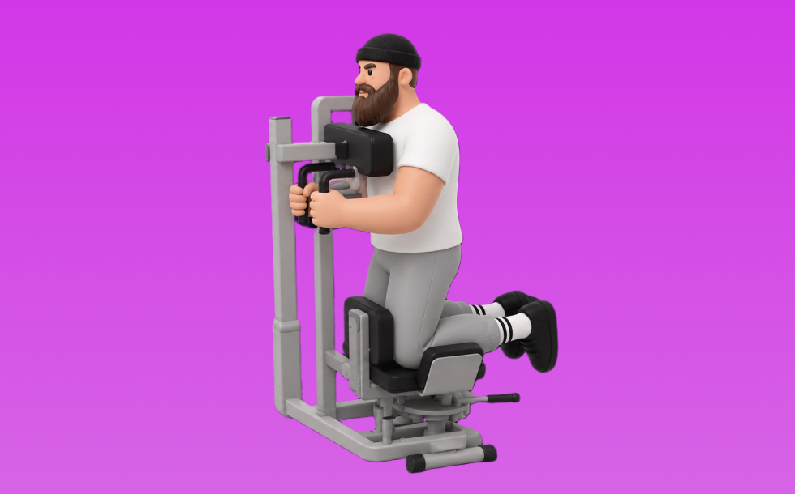

ケーブルロータリートルソー

ケーブルロータリートルソーとは、マシンを使って「動かす」動作で腹斜筋、体幹を鍛える種目です。軌道が安定して狙った部位に効かせやすいのが特徴で、体幹を安定させたまま、ひねる／押し出す動作をコントロールして行います。お腹の引き締めと体幹固定力の向上が期待できます。
- 対象部位
- 体幹
- 器具
- マシン
- 記録形式
- 回数
- 別名
- ローテーションマシン
YouTube動画
-
【LIGHT ZONE】ロータリートーソ
-
【お腹引き締め】お腹・腰回りが気になってきたらこのマシンをやりたい！ロータリートルソー
-
ロータリートルソ 基本の使用方法解説
-
ケーブルサイドベンドの正しいフォーム◎腹筋横の『腹斜筋』をケーブルで鍛える！
-
【筋トレ解説・腹筋トレ】ロータリートルソー【筋トレライブラリー】
-
【ジム初心者向け！筋トレマシンの使い方】⑭ロータリートルソー
-
くびれを作る！？ロータリートルソー
-
ロータリートルソー
-
【マシン】腹斜筋を鍛える「ロータリートーソ」の基本的な使い方
-
【ジムでの基本の腹筋】これ意識するだけで割れる！
-
【くびれを作る】誰でも簡単、トーソローテーション解説！！！
-
FTS Glide トルソーローテーション
-
【マシン解説】くびれを作るコツ大公開！ロータリートルソーの使い方をプロトレーナーが徹底解説！
-
【筋トレ】anytime fitnessのロータリートルソーを徹底解説！！
-
【Nice BeaT浜松】ロータリートーソ 効果的なフォーム
-
◯◯なのに24時間ジムに行く人の気持ちが理解できないジュラシック木澤
-
【ケーブルエクササイズ】ケーブルツイストでくびれ作り！
-
ケーブルクロスオーバーの基本 マルチファンクショナルトレーナー販売中！
-
IF9318 トルソーローテーション
-
くびれ作りにはケーブルマシンがオススメ！
-
何年やっても筋肉が付かない最悪な筋トレ
YouTubeショート
-
1番ロータリートルソー
-
【ジムにこういう奴おらん？】使用中のケーブルマシンの片側を無言で使う奴
-
ジムのマシンを使いこなしたい方へ【ロータリートルソー】
-
くびれを作ろう！ロータリートルソー
-
ロータリートルソー
-
ロータリートルソー
-
1分でわかる！背中トレ🦋149cmトレーナー
-
【ガチで効く】”腹斜筋”を鍛える宅トレメニュー４選🔥 #shorts #腹筋 #シックスパック
-
【ロータリートーソー】の使い方♪ワールドプラスジムでレッツトライ！
-
正しいラットプルダウン4つのポイント【筋トレ】
-
意味のないトレーニング４選！【筋トレ】
-
マシンの使い方紹介【トーソローテーション】（腹斜筋）
-
トーソローテーションの使い方
-
【ライフ】トーソローテーション
-
パワートルソーの使い方
-
24Hジムで1度は見たことある光景TOP20 第19位
-
筋トレあるある「脚トレの日の朝によく見る走馬灯」#shorts
-
【ジムあるある】初心者編TOP4#ジムあるある# #ダイエット女子 #ジム女子#フィットネス女子#初心者#ジム初心者#筋トレ女子
-
意味のない筋トレTOP３ #shorts #筋トレ #タケタコタン渾身の演技披露
-
【あるある】安い服でジムに来る人をどう思うのか【全トレーニー心の声】
-
瑞浪市 24時間ジム 腹筋 トレ
-
ケーブルマシン
-
【初心者におすすめ】セクシーな腹斜筋を作る自重トレ5種目 #筋トレ #ダイエット #腹筋 #腹斜筋
動作方法
- 体幹を固定して姿勢を整える
- 反動を使わず、腹部の収縮を感じる
- 呼吸を止めずに動作する
動作ポイント
- 腰を反らしすぎない
- 首に力を入れすぎない
ワンポイントアドバイス
- 回数よりも体幹の安定を優先する
- 腰に違和感がある場合は可動域を調整する
目的別回数設定
目的や体力に応じた一般的な目安です。無理のない範囲で調整してください。
- 筋力アップ
- 1〜5回
- 筋肥大
- 6〜12回
- 持久力アップ
- 13〜20回
YouTube動画について
動画はYouTubeの公開情報をもとに表示しています。内容は投稿者によるもので、Biggrによる監修ではありません。
アプリを入手
筋トレやトレーニングの記録はBiggrにお任せください。今すぐ無料で使い始められます。